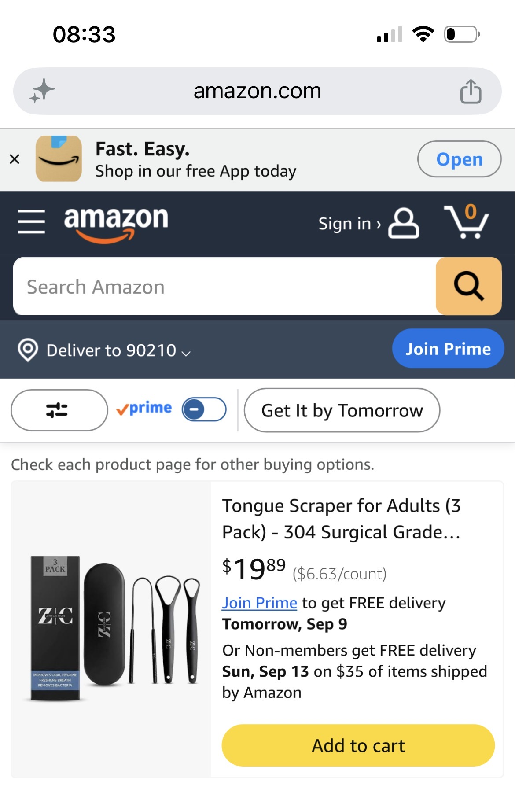
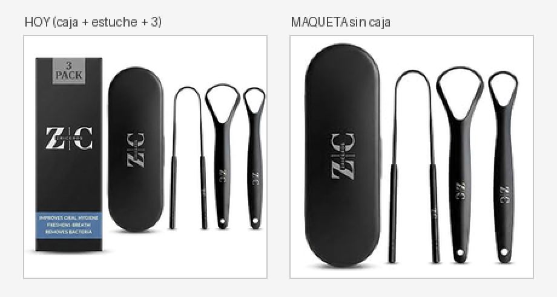

← Índice del proyecto · Estrategia de PPC · Listing
| Número | Qué es | Malo | Bien | Qué esperamos |
|---|---|---|---|---|
| ACoS |
Advertising Cost of Sales: de cada $100 vendidos por publicidad, cuántos se fueron en publicidad. $18,66 gastados sobre $99,45 vendidos. | Arriba de 45,2% |
25–40% en lanzamiento | Que suba, no que baje. Un 18,8% con 4 pedidos es peor negocio que un 30% con 25. El ACoS no es una nota: es cuánto estás dispuesto a pagar por crecer. |
| Equilibrio |
El ACoS donde la publicidad se come toda la ganancia. Sale de la contribución: $9,00 sobre $19,89 de precio. | No es bueno ni malo: es el techo | Fijo mientras no cambien el precio ni los costos. Hoy usamos el 41% de ese techo. | |
| Conversión |
CVR, Conversion Rate: de cada 100 que entran a la ficha, cuántas compran. 4 pedidos sobre 11 clics. | Menos de 10% | 15–20% es bueno 36% es excepcional |
Que baje un poco al escalar, y está bien: tráfico más amplio es menos calificado. Si baja de 20%, mirar. |
| Ganancia neta |
Lo único que va al bolsillo: 5 unidades × $9,00 de contribución, menos $18,66 de publicidad. | Negativa | Positiva desde la semana 1 | Que crezca por volumen, aunque el ACoS suba. Es el número que hay que mirar, no el ACoS. |
| CTR |
Click-Through Rate: de cada 100 que ven el anuncio, cuántas clican. 11 clics sobre 2,046 impresiones. | Menos de 0,3% | 0,8–1% bueno 1,5% fuerte |
Es el número flojo y el más importante ahora. El promedio de Sponsored Products anda en 0,4%: estamos apenas encima, y con 0 reseñas eso es exactamente lo esperable. |
| CPC |
Cost Per Click: lo que se paga cada vez que alguien clica. | Cuando el ACoS pasa el techo | Mientras el neto por unidad sea positivo | Que suba al escalar. Aguantamos hasta ~$3,50 y seguir ganando. |
1. Gana plata y le sobra margen. ACoS de 18.8% contra un techo de 45.2%: usamos el 41% de lo que podríamos gastar. Quedan $5.27 netos por unidad.
2. El que entra, compra. 36% de conversión sin una sola reseña, contra un promedio de categoría de 10–15%. El producto, el precio y la ficha están bien.
3. El problema es que no entra. 11 clics en toda la semana, CTR de 0.54%. El cuello está entre la impresión y el clic — nos ven 2,046 veces y nos clican once.
4. Y casi no se gastó: $18.66 de los $154 habilitados (12%). Con un CPC de $1.70 contra pujas planeadas de $0,75–$0,90, lo más probable es que no estemos ganando las subastas.
En plata, no en tiempo: las ventas semanales deberían subir, así que proyectar por fechas sería inventar.
| Concepto | Por unidad | Por 1.000 |
|---|---|---|
| Ingresos | $19.89 | $19,890 |
| − Tarifas de Amazon | −$7.44 | −$7,440 |
| − Costo del producto | −$3.45 | −$3,450 |
| = Contribución antes de PPC | $9.00 | $9,000 |
Según lo que cueste la publicidad:
| Escenario | ACoS | PPC total | Neto del ciclo | Sobre el capital* |
|---|---|---|---|---|
| Hoy — $3,73/unidad | 18.8% | $3,732 | $5,268 | 153% |
| Si baja a $2,50 | 12.6% | $2,500 | $6,500 | 188% |
| Si baja a $1,50 | 7.5% | $1,500 | $7,500 | 217% |
| Equilibrio | 45.2% | $9,000 | $0 | 0% |
| Término | Camp. | Impr. | Clics | Coste | Compras | Ventas | Unid. | ACoS | Lectura |
|---|---|---|---|---|---|---|---|---|---|
tongue scraper | auto | 108 | 5 | $4.22 | 1 | $19.89 | 1 | 21.2% | genérica · el CPC más barato de la cuenta ($0.84) |
tongue brush | PRIMALS | 23 | 1 | $2.19 | 1 | $39.78 | 2 | 5.5% | el mejor: 2 unidades en un clic |
copper tongue scraper for adults | PRIMALS | 12 | 1 | $1.68 | 0 | $0.00 | 0 | — | no somos de cobre — negativa |
tongue scraper stainless steel | PRIMALS | 9 | 1 | $2.19 | 1 | $19.89 | 1 | 11.0% | atributo real nuestro |
tongue scraper dr tung | PRIMALS | 3 | 1 | $2.92 | 1 | $19.89 | 1 | 14.7% | marca competidora |
tongue scraper with stand | PRIMALS | 3 | 1 | $2.92 | 0 | $0.00 | 0 | — | traemos estuche, no pedestal |
tongue scraper titanium | PRIMALS | 1 | 1 | $2.54 | 0 | $0.00 | 0 | — | no somos de titanio — negativa |
| Total | 159 | 11 | $18.66 | 4 | $99.45 | 5 | 18.8% |
Negativas de frase, cargar ya — $7,14 tirados en la
semana 1 (el 38% de la inversión) en búsquedas que describen un producto que no
vendemos: copper, titanium, with stand,
cheap.
Manual en exacta, puja = CPC pagado +25%:
tongue brush $2,75 ·
tongue scraper dr tung $3,65 ·
tongue scraper stainless steel $2,75.
Y tongue scraper en frase a $1,05: es la genérica
que el plan quería negativizar, y resultó el término más barato de la cuenta
($0,84) y convirtió.
Cada palabra que pasa a manual va como negativa exacta en la automática, o las dos campañas compiten entre sí y nos subimos el CPC solos.
Subir pujas hasta un ACoS objetivo del 30% y
Top of search +25%. Sumar el ASIN B0DFJ3CD7M
(Natruveda), que estaba en el plan y no se cargó.
ventas = impresiones × CTR × conversión
Hoy: 2,046 × 0.54% × 36.4% = 4 pedidos.
La conversión está resuelta. No se toca: el que entra, compra. Las impresiones se pagan en cada subasta. El CTR es el único factor gratis, y multiplica todo lo que venga después.
| Para 25 pedidos/semana | Impresiones necesarias | Contra hoy |
|---|---|---|
| Con el CTR de hoy (0,54%) | 12.700 | 6,2× |
| Con CTR 1,1% | 6.244 | 3,1× |
| Con CTR 1,6% | 4.293 | 2,1× |
Triplicar el CTR vale más que triplicar el gasto, y no cuesta nada. Por eso las dos secciones que siguen.
El título hace dos trabajos distintos:
El título vivo hoy (187 de 200) está bien: usa casi todo el espacio y tiene los términos que convirtieron. En amarillo, lo que entra en la ventana del celular:
Queda un problema, y es de orden. En los resultados de
búsqueda el título se corta en
«Tongue Scraper for Adults (3 Pack) - 304 Surgical Grade…».
with Travel Case está en la posición 103 y
no llega a leerse nunca. En la ventana visible entra
304 Surgical Grade, que dice de qué está hecho, no
por qué conviene. El estuche —media conversación contra un
raspador suelto de $9,99— se pierde.
Propuesta (198 de 200). No agrega nada, sólo reordena:
Ahora en la ventana entra qué es, para quién, cuántos y con
estuche. Lo técnico pasa atrás, donde sigue indexando igual. Y se suma
Tongue Cleaner como frase, que hoy sólo aparece partido en
«Scrubber & Cleaner».
En la grilla de resultados la foto es lo primero y muchas veces lo único que se mira antes de decidir, y se mira a ~200 píxeles en un teléfono. La prueba que ordena todo: achicarla a ese tamaño y contar.
La principal de hoy muestra, de izquierda a derecha: la caja de presentación, el estuche de viaje y los tres raspadores. Está bien resuelta: fondo blanco puro y el producto ocupando el 95% del ancho y el 98% del alto. No hay nada que arreglar ahí.
La celda de la miniatura en los resultados es vertical —450 × 647 px— y el producto ocupa el 86% del ancho pero sólo el 51% del alto. Sobran 317 píxeles de blanco, casi la mitad de la celda.

La causa es la composición. Los cuatro elementos están en una sola fila horizontal, y Amazon mete la imagen cuadrada en una celda vertical: la escala hasta que entra a lo ancho, y todo lo que sobra de alto queda en blanco. Cuanto más ancha la composición, más chico se ve el producto.
Si llenara el 90% del alto de la celda se vería ×1,76 más grande de lado — 3 veces más superficie en la grilla, sin pujar un peso más ni cambiar el producto. Es la mejora más grande que queda, y es gratis.
Dos formas de lograrlo, de menor a mayor:
La mejora que queda: sacar la caja de presentación, para que el estuche y los raspadores se vean más grandes.
| Elemento | Ancho que ocupa | Qué aporta |
|---|---|---|
| Caja de presentación | 28% | Poco. Todo producto viene en una caja, y el «3 PACK» impreso es redundante: los tres raspadores están al lado y se cuentan solos. Además es el elemento más a la izquierda, o sea el primero que se lee. |
| Estuche de viaje | 24% | El diferenciador. Contra un raspador suelto de $9,99 es la mitad del argumento, y es lo que el título promete. |
| Los tres raspadores | 39% | La otra mitad. Es el «3» que hay que poder contar en un segundo. |
Sacando la caja, lo que queda crece ×1,54 con el mismo cuadro. Medido, no estimado. Así se ve a 200 píxeles, que es el tamaño real en un teléfono:

Y una segunda versión que vale la pena probar: el estuche abierto, con los raspadores adentro. Cuenta la historia del producto —se guardan, viajan, no se ensucian— en vez de mostrar objetos sueltos. Eso no es una edición: es una foto nueva, y la composición ya está probada en la imagen 3.
La versión nueva hay que armarla sobre el archivo original —Seller Central → Gestionar imágenes → descargar, o el que entregó el fotógrafo—, no sobre una captura de la ficha. Amazon pide 1600 px de lado para habilitar el zoom, y una imagen ampliada desde una captura queda borrosa: rinde peor que la actual.
Lo que la principal NO puede llevar (Amazon lo rechaza o suprime el listing): texto, logos, marcas de agua, bordes, fondos que no sean blanco puro, ni accesorios que no vengan en la caja. El 85% del cuadro es un mínimo, no un tope. El texto va en las imágenes 2 a 7 — pero ésas mueven la conversión, que ya está en 36%, así que no son la prioridad. La única que pelea por el clic es la principal.
Amazon Vine: no se puede. Requiere Brand Registry y la marca no está registrada. Era la palanca más grande para las reseñas y queda fuera — conviene no volver sobre eso hasta que haya marca registrada.
Sponsored Brands y Sponsored Display: tampoco. Las dos piden Brand Registry. Tener cargado el campo «Brand» del listing no es lo mismo que tener la marca registrada. Quedan fuera hasta que haya registro.
El cupón: dudoso, y no es prioridad. Pinta un badge verde en los resultados, pero no está claro que esté habilitado en una cuenta nueva y su efecto principal es sobre la decisión de compra — que es justamente lo que ya funciona. Cuesta margen real para resolver un problema que no tenemos. Si se prueba, que sea después del título y la imagen, y midiendo.
Bajar el precio: no. A $19,89 la conversión es del 36%. El precio no está frenando nada; bajarlo es regalar margen.
Tocar el listing para «mejorar la conversión»: no. Está en 36%. Cualquier cambio tiene más chance de romperlo que de mejorarlo. Del listing se toca sólo el título y la imagen principal, y por CTR, no por conversión.
Un cambio por vez, una semana de datos entre uno y otro. Si se mueven título, imagen y pujas el mismo día, cuando suba no se va a saber por cuál.
Dos fuentes, el mismo día: el panel de Campaign Manager (totales) y el informe de términos de búsqueda (desglose, sólo búsquedas con clics). Cada semana se agrega una sección arriba sin borrar las anteriores: la gracia es la serie, no la foto.